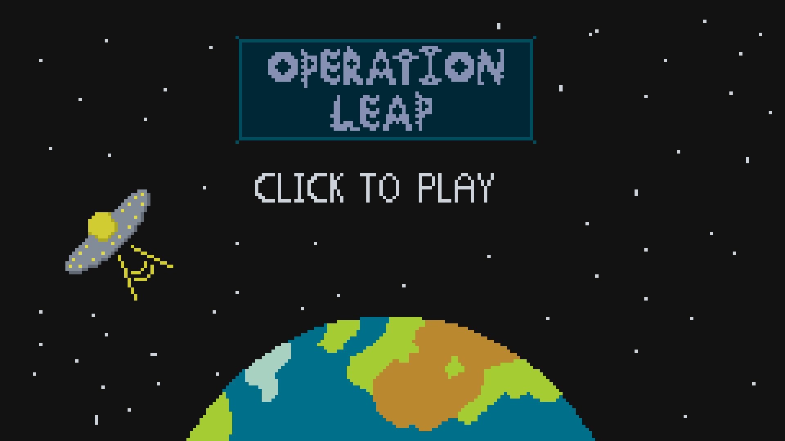

Operation Leap
Used: unity, C#
Operation Leap was the first game I made as part of the university ran game jam Three Thing Games, it was made by myself, Matt Bays, Ellison Dean and Stephen Budd.
This was my first time working on a game in a group and the first time for my teammates working on a game at all, which made me the most confident with both programming and working with unity, meaning I ended up doing most of the programming for this project. We ran into a few challenges during the 24 hour event.
Each team got given 3 words, we were given "drought", "global" and "tidal", after a few minutes of discussion we decided on a vertical platformer, where you race to the top while water rises. This covered only tidal so we had each level be a different place and as each level was completed more water would appear on the level select, since we neglected to use source control we decided to split the work between half of us working on assets and half of us programming. I handled most of the code with help from Ellison, whilst Matt and Stephen handled the assets and levels.
At the end of the 24 hour event we had 5 levels, a level select and a main menu, we didn't finish everything we wanted but had a functional game and